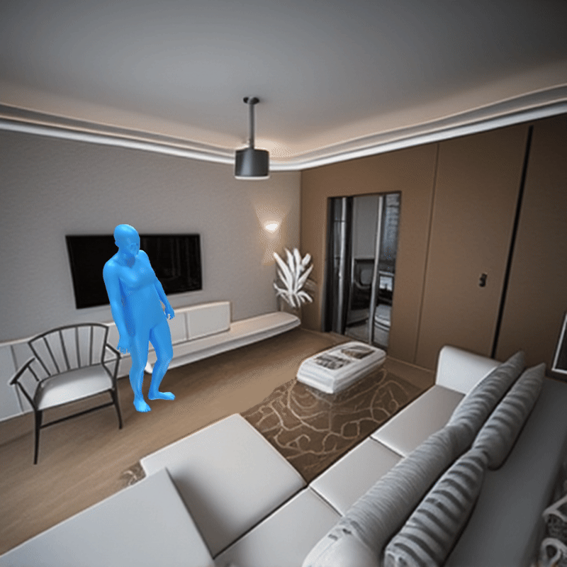
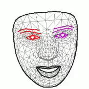
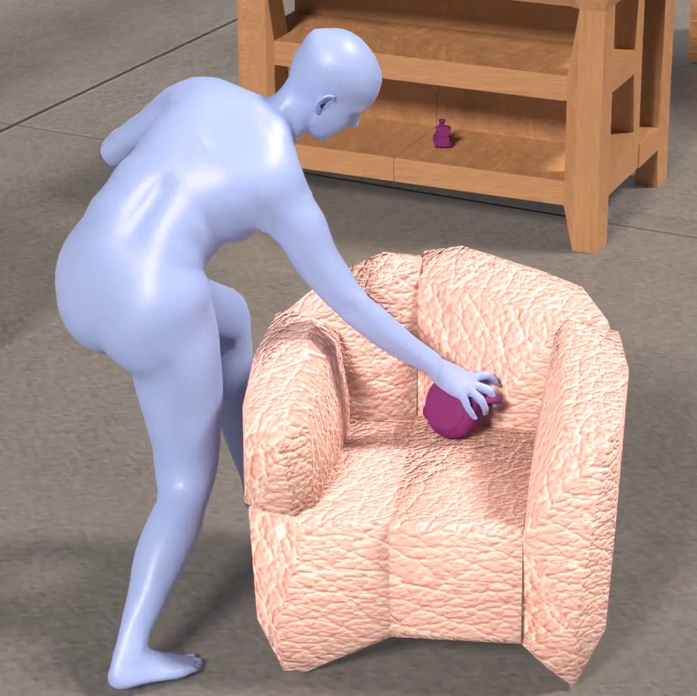
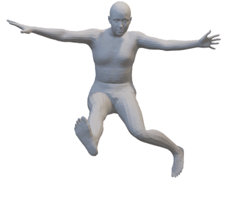
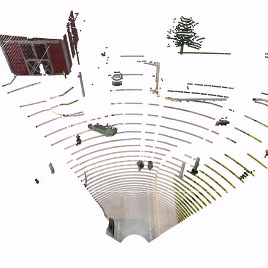
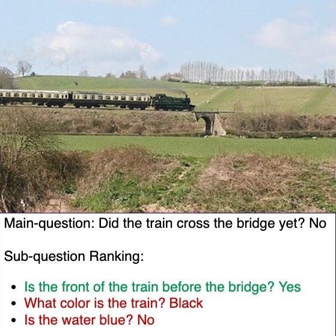
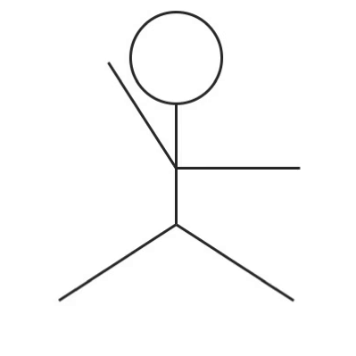
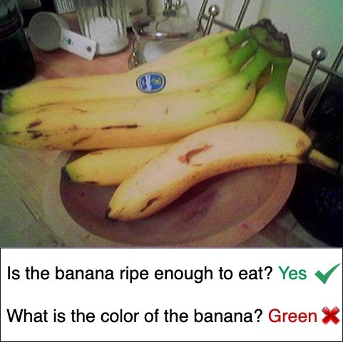
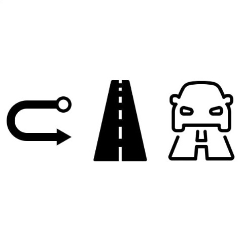

👋 I am the CEO & founder of an early-stage startup in the social/AI space, currently in stealth. My work blends years of expertise in machine learning with a passion for building products that make digital interactions more authentic and meaningful.
👩🎓 Before founding my company, I was a PhD candidate in Machine Learning at Columbia University advised by Carl Vondrick, where my research focused on generative models and human-AI interaction. I have published at top conferences (CVPR, ICCV, ECCV) and my work has been supported by the Apple Scholars in AI/ML PhD Fellowship and the Columbia Presidential Fellowship.
👩💻 I hold a Master's in Computer Science from Georgia Tech, where I worked on creative AI with Devi Parikh and collaborated with Ani Kembhavi at AI2, and a Bachelor's from COEP in India. I've also interned at University of Tübingen, Meta Reality Labs, UC San Diego, and AiBee. Outside of work, I enjoy practicing and listening to music, playing board games and hiking.
📭 I am best reached via email: purva dot tendulkar at gmail dot com. Social media:


News
- [Jun '25] Dropped out of PhD to build my startup 🚀
- [Dec '23] Awarded the Apple Scholars in AI/ML PhD Fellowship
- [Apr '22] Attended the CRA-WP Grad Cohort for Women 2022 in New Orleans 👩💻
- [Mar '21] Awarded the Columbia University Presidential Fellowship 🏛️
Selected Research (Archive)
Prior work in generative models, human-AI interaction, and 3D humans.
Show publications Google Scholar
-

🎬 Populating Images with Moving 3D Humans Purva Tendulkar, István Sárándi, Gerard Pons-Moll, Carl Vondrick
Project Page
Pre-print 2025 -

🖥️ How Video Meetings Change Your Expression Sumit Sarin, Utkarsh Mall, Purva Tendulkar, Carl Vondrick
Paper Project Page Code
ECCV 2024 -

🤸 FLEX: Full-Body Grasping Without Full-Body Grasps Purva Tendulkar, Dídac Surís, Carl Vondrick
Paper Project Page Talk Code Poster
CVPR 2023 - 
-
🗣️ Affective Faces for Goal-Driven Dyadic Communication Scott Geng*, Revant Teotia*, Purva Tendulkar, Sachit Menon, Carl Vondrick
Paper Project Page
arXiv 2023 -

🫣 Revealing Occlusions with 4D Neural Fields Basile Van Hoorick, Purva Tendulkar, Dídac Surís, Dennis Park, Simon Stent, Carl Vondrick
Paper Project Page Talk Code
CVPR 2022 (Oral) - 
-

🎵 Feel The Music: Automatically Generating A Dance For An Input Song Purva Tendulkar, Abhishek Das, Aniruddha Kembhavi, Devi Parikh
Paper Talk Code Press Coverage Tech@Meta Article
ICCC 2020 (Oral) - 
- 
Teaching & Mentorship (Archive)
Past roles at Columbia & Barnard.
- Representation Learning (COMS 6998, TA — Fall '21, '22)
- Women in Science (mentor — '21-'22)
- BEARS Mentorship (Barnard — Spring '22)
- Amazon-SURE Mentorship (Summer '22)